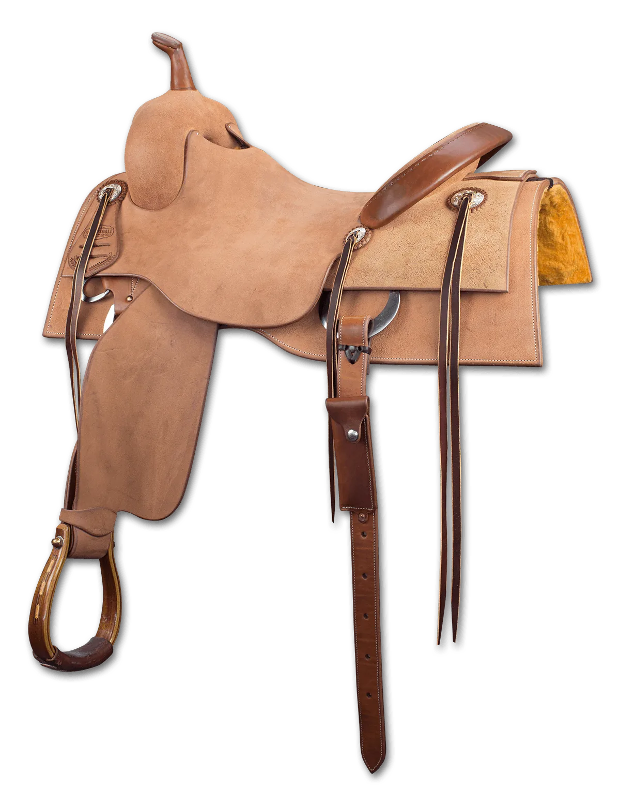
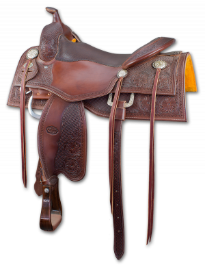
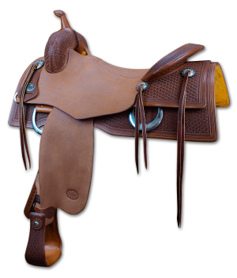

Official Sponsor
Andy Maschke builds purpose-designed cow horse and cowhorse/reiner crossover saddles hand-crafted in the USA. Every saddle starts with a glass-encased SYMMETREES™ wood tree.
Superior Saddlery — Cow Horse Builds
These saddles are used by NRCHA open competitors and non-pros at every level of the sport. Pricing and availability direct from Superior Saddlery — click any saddle to view full specs and order.




Andy Maschke has spent decades building saddles trusted by NRHA and NRCHA competitors at the highest levels of the sport. His SYMMETREES™ system — glass-encased wood trees that resist warping and moisture damage — sets his builds apart from imported or synthetic-tree alternatives. Every saddle leaves his shop with H/O skirting leather, a hand-fitted gullet, and the same attention to tree fit that defines a competition-quality build. Contact Superior Saddlery directly to discuss custom options and current availability.
Also Available
David Solum's pre-owned inventory includes cow horse and crossover builds from Superior, Bob Avila by Bob's Custom, and other competition-proven makers — all personally inspected and certified.
Browse Certified Used →